目录 [−]
前几天我写了篇读书笔记: 《产品级微服务的八大原则》，介绍了Uber的SRE工程师 Susan J. Fowler 的免费书: Microservices in Production,文中提出了一个微服务成功与否的唯一标准就是可用性，非常有实践意义。但是这本书偏向于从 SRE （site reliability engineer）的视角看待微服务，对于开发工程师 (SWE, software engineer)来说，更关注的是如何正确地从单体程序重构到微服务架构，或者从头设计微服务架构， 这篇读书笔记主要就是介绍这方面的实践和经验。
Oreilly 的 的这本免费小书 Microservices AntiPatterns and Pitfalls由经验丰富的 Mark Richards 编写。书中将反模式(AntiPattern)定义为"起初看起来很美好，做到最后麻烦不断的实践模式"，而将陷阱(Pitfall)定义为“起初看起来就不是一个好的设计”，书中列举了微服务开发中几种常见的反模式和陷阱，这些经验非常的接地气.他还提供了视频教程。
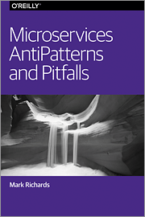
2006年 SOA (service-oriented architecture) 狂热流行，无数的公司随着技术潮流拥抱 SOA， 不管它们是否已经完全理解了这种复杂的架构风格的长处和短处，这些公司不可避免地陷入和服务粒度、性能、数据迁移以及SOA组织改变的斗争中，很多公司不得不放弃了 SOA， 或者折衷的建立了一种混杂的架构风格。
历史的悲剧又将重演。微服务是行业当前的发展趋势。现在，微服务就像2000年中期的 SOA 一样是技术的热潮。很多公司都在朝着微服务架构的方式改变，以期获得微服务架构的好处，例如便于测试，快速，易于部署，细粒度的可扩展性，模块化和敏捷性。然而，像 SOA 一样，这些企业开发微服务的时候又陷入了服务粒度，数据迁移，组织形式改变和分布式处理的斗争中。
就像很多新技术一样， 你了解的越深，架构风格、反模式、陷阱就会出现，并且这各个过程中得到不少教训。正如上面所说，反模式就像走到一条正确的路上，走了很久才发现路错了，而陷阱则是开始没多久你就会发现路是不对的。
这本书介绍了几种常用反模式和陷阱，但是明显的是，不可能将微服务所有的反模式和陷阱在这么一本薄薄的书中全部介绍。这些常用的反模式和陷阱包括服务粒度 (沙粒陷阱), data migration (数据驱动的迁移反模式), remote access latency ("我们到了吗"陷阱), reporting (到达报告反模式), contract versioning (静态契约陷阱), service responsiveness (超时反模式)等等。
数据驱动的迁移反模式
Data-Driven Migration AntiPattern
微服务会创建大量小的、分布式的、单一用途的服务，每个服务拥有自己的数据。这种服务和数据耦合支持一个有界的上下文和一个无共享数据的架构，其中，每个服务及其对应的数据是独立一块，完全独立于所有其他服务。服务只暴露了一个明确的接口（服务契约）。有界的上下文可以允许开发者以最小的依赖快速轻松地开发，测试和部署。
采用数据驱动的迁移反模式大多是当你从一个单体(monolithic)应用程序到微服务架构迁移的时候。我们将之称为反模式原因是，它似乎是在开始创建微服务的时候看起来是一个好主意，服务和相应的数据独立成一个微服务，非常的美好，但正如书中接下来介绍的，这可能会将你引向一个错误的道路上，问题是高风险，过剩成本和额外的迁移工作。
单体应用迁移到微服务架构有两个主要目标：第一个目标是单体应用程序的功能分割成小的，单一用途的服务。第二个目标是单体应用的数据迁移到每个服务自己独占的小数据库（或独立的服务）。
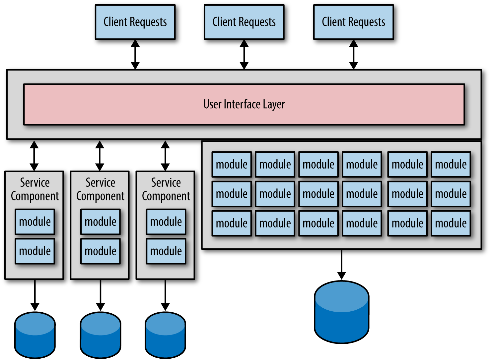
如上图所示，理想很丰满,但是现实很骨感。
太多的数据迁移
这种迁移最主要的问题是你很难一次将数据库的粒度很好的分割成独立的每个微服务独占的数据。
当然你开始可以分割成粗粒度的数据和服务，然后再进一步的分割成更小的微服务和数据，你可能要频繁地进行服务调整：粒度太小，合并微服务；粒度太大，分割成更小的微服务。数据迁移要比源代码迁移更复杂，更容易出错，理想情况下只为微服务迁移数据一次。理解数据迁移的风险性是避免这种反模式的第一步。
功能分割优先，数据迁移最后
避免这种反模式的主要技术就是首先迁移功能，然后再考虑划分这个微服务和它的数据的有界上下文。
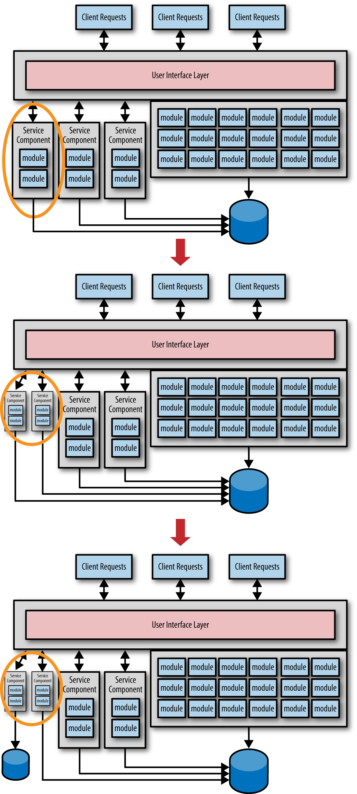
超时反模式
微服务是一种分布式的架构，它所有的组件（也就是服务）会被部署为单独的应用程序，并通过某种远程访问协议进行通讯。分布式应用的挑战之一就是如何管理远程服务的可用性和它们的响应。虽然服务可用性和服务响应都涉及到服务的通信，但它们是两个完全不同的东西。服务可用性是服务消费者连接服务并能够发送请求的能力，服务响应则关注服务的响应时间。
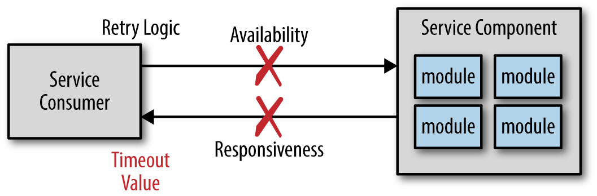
如果服务不可用，服务消费者会在毫秒级的时间内得到通知，它可以返回错误信息或者尝试连接。但是如果服务接收了请求但是不响应，服务消费者该怎么办？可以无限等待或者设置一个超时时间。
超时看起来也挺不错，但也会导致反模式。
使用超时
你可能很困惑，难道不应该设置一个超时时间吗？你理解的很对，但是在大部分的情况超时时间的错误设置会带来问题。比如当你买东西的时候，你提交了订单，服务一直在处理没有返回，你在超时的时候再提交订单，显然服务器需要更复杂的逻辑来处理重复提交订单的问题。
所以你可能不想设置超时时间太短，但是多少合适呢？一种基于数据库的超时来计算服务的超时时间，另一种更常用，计算大压力下最长的处理时间，把它乘以2作为超时时间。但是这个值可能非常的不合适，有可能用户觉得等待太久就把页面关了，所以还的寻找更好的方式。
使用熔断器设计模式
Circuit Breaker Pattern
这种设计模式就像家里的电器的保险丝一样，当负载过大，或者电路发生故障或异常时，电流会不断升高，为防止升高的电流有可能损坏电路中的某些重要器件或贵重器件，烧毁电路甚至造成火灾。保险丝会在电流异常升高到一定的高度和热度的时候，自身熔断切断电流，从而起到保护电路安全运行的作用。
当一个软件熔断器监测到服务没有响应的时候，它就会熔断，拒绝请求。一旦服务恢复，熔断器就会接上，允许服务通过。
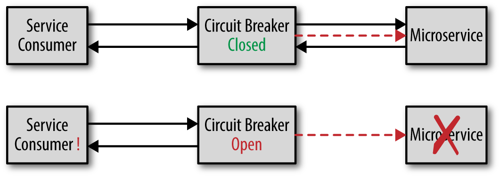
熔断器有多种方式监控服务的可用性，最简单的方式就是心跳检查，也可以用调用虚拟的服务精确监测，还可以实时地监控服务调用的状态，一旦到达一个阈值，则熔断器进入限流的状态。
共享反模式
I Was Taught to Share" AntiPattern
微服务是一种无共享的架构，我更倾向于叫它为"尽量不分享"模式(share-as-little-as-possible)， 因为总有一些代码会在微服务之间共享。比如不提供一个身份验证的微服务，而是将身份验证的代码打包成一个jar文件：security.jar，其它服务都能使用。如果安全检查是服务级别的功能，每个服务接收到请求都会检查安全性，这种方式可以很好的提高性能。
但是这容易引起"依赖噩梦"：
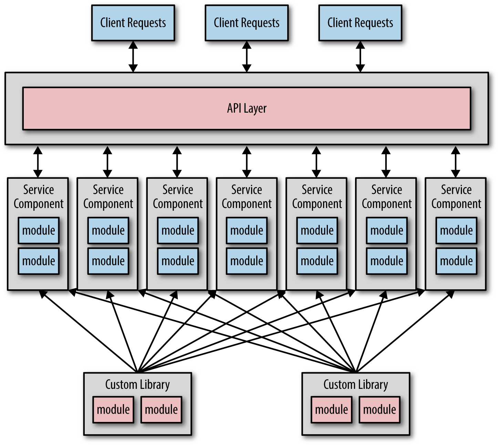
太多依赖
如果你使用面向对象的开发语言，肯定会遇到下面的继承关系，成百的模块拆成微服务的时候都会依赖很多的共享库。
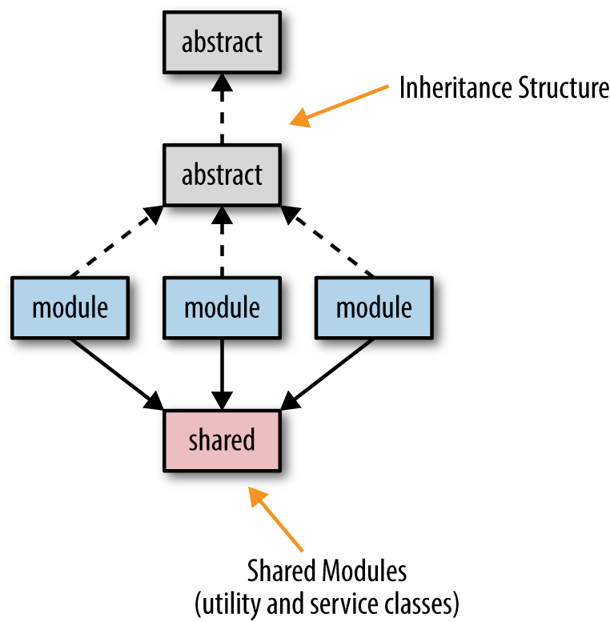
微服务的目标之一就是尽量少的共享，这会帮助微服务确定它的有界上下文，服务更容易的测试和部署。服务之间依赖越多，服务则更难被隔离。
共享代码的技术
说起来容易做起来难,下图介绍了代码共享带来问题的四种场景。
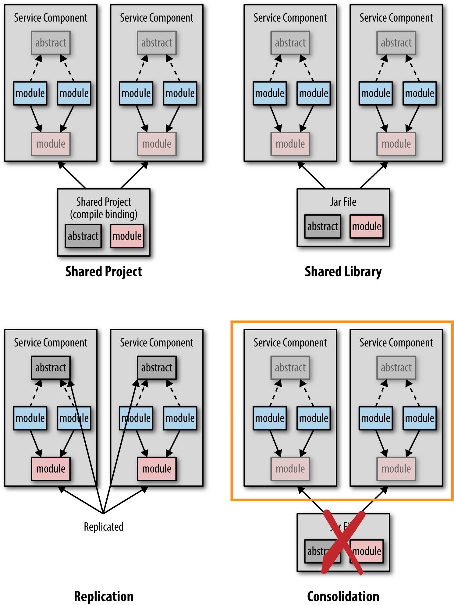
前三种的共享代码的方式好理解，第四种方式是将共享代码的逻辑分割出来，做成一个单独的服务，比如身份验证服务。
对于共享库来说，不要把所有共享的代码放在一个库中，比如common.jar,而是根据它们的逻辑划分成更小的库，比如security.jar, persistence.jar, dateutils.jar。
到达报告反模式
Reach-in Reporting AntiPattern
有四种方式可以处理微服务架构中的报告。
- database pull model
- HTTP pull model
- batch pull model
- event-based push model
前三个模型都是从微服务自己的数据库中拉取数据，所以这个反模式就叫"rearch-in reporting"。既然前三种会出现这中反模式，我们就先看看为什么它们会带来麻烦。
微服务报告的问题
问题有两面：
- 如何定时的获取报告的数据?
- 仍然保持着微服务和数据的的有界上下文?
下图是database pull model,直接访问数据库，这会带来数据库的非独立性。
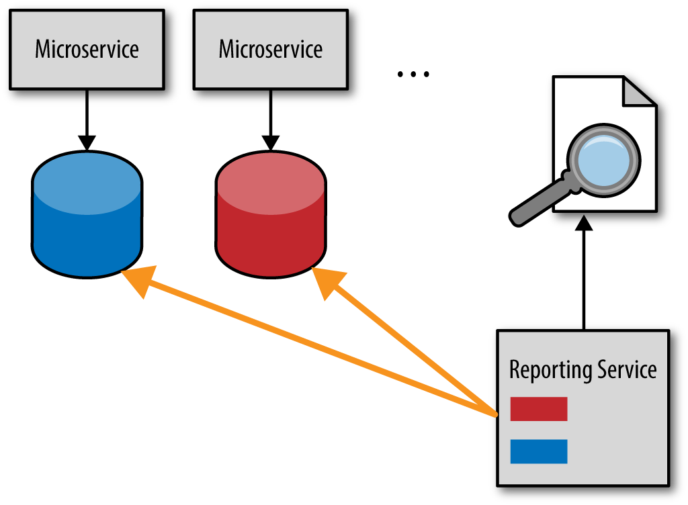
下图是HTTP pull model,微服务提供数据报告接口，但是会影响微服务的性能，尤其是复杂报告的查询。
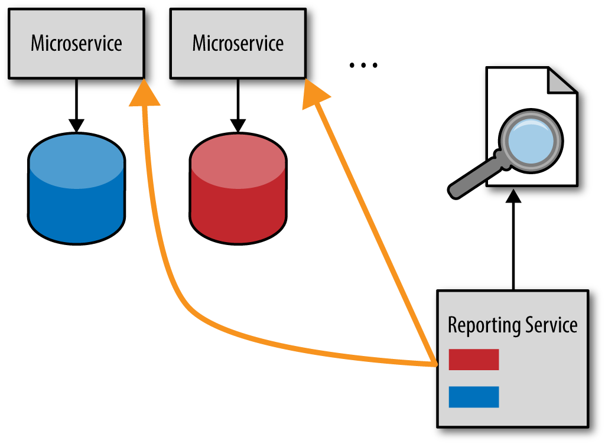
下图是batch pull model,批处理程序成批地将微服务的数据倒入到报告的数据库中，但是问题和HTTP pull model一样，这会带来数据库的非独立性，微服务数据库格式的改变也会影响报告服务。
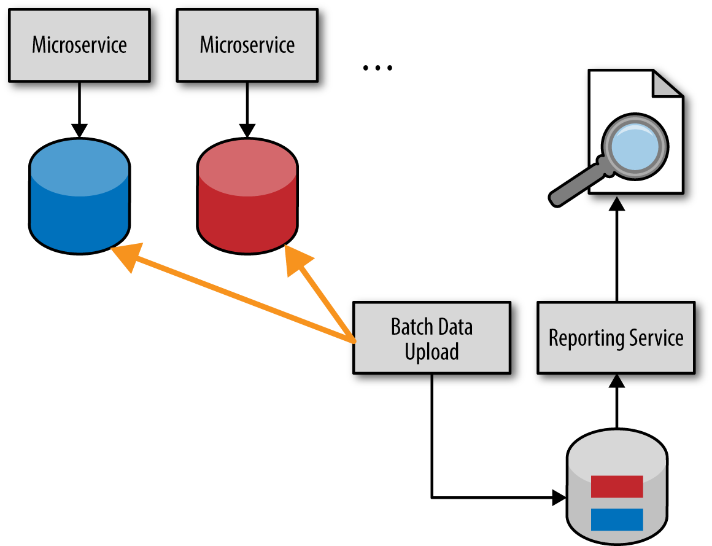
Asynchronous Event Pushing
下图是event-based push model，也叫 data pump。虽然相对复杂，但是不会违背本节开始提出的两个问题。
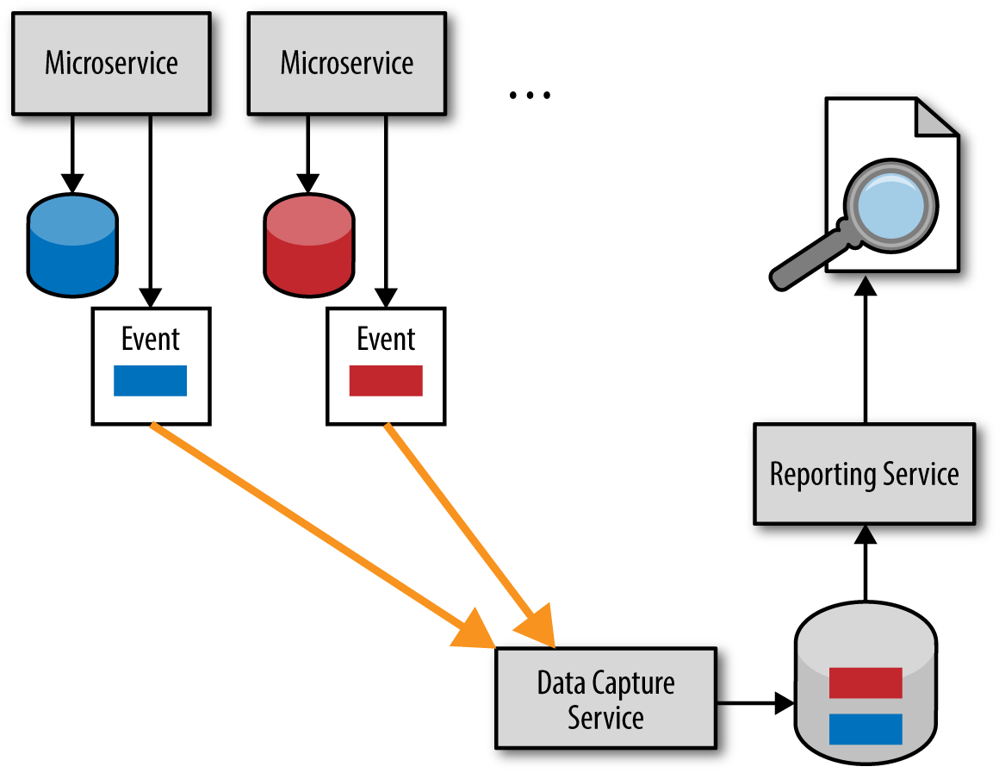
沙粒陷阱
Grains of Sand Pitfall
架构师和开发人员在采用微服务架构的时候最大的挑战之一就是服务粒度的问题。微服务的服务粒度多大合适？服务粒度至关重要，它会影响应用的性能、健壮性、可靠性、可测性、设置发布模型。
当服务的粒度太小的时候就会遇到沙粒陷阱。微服务的微并不意味着服务越小越好，但是多小是小？
如果你检视一下微服务实现的项目，会发现很多一个类实现的微服务，在这种情况下会容易遇到沙粒陷阱。
当然微服务的粒度并不是靠服务实现的类的数量所决定的，有些服务很简单，只需一个简单的类就可以实现，而有些确需要更多的类。既然类的数量不能用来决定微服务的粒度，那么用什么标准来衡量微服务的粒度是合适的呢？主要依赖：服务的范围(scope)和功能(functionality)、数据库事务的需求以及服务编排的等级。
分析服务的范围和功能
服务要做什么？有那些操作？
完整性(Cohesion)扮演了很重要的角色。比如一个顾客服务(customer service)有下面的操作：
- add_customer
- update_customer
- get_customer
- notify_customer
- record_customer_comments
- get_customer_comments
前三个操作是相关的，它们用来管理和维护顾客信息。但是后三个并不和基本的CRUD操作相关。在分析这个服务的完整性的时候，我们就比较清晰了，这个服务可以被分成三个服务：顾客信息服务、顾客通知服务和顾客评论服务。
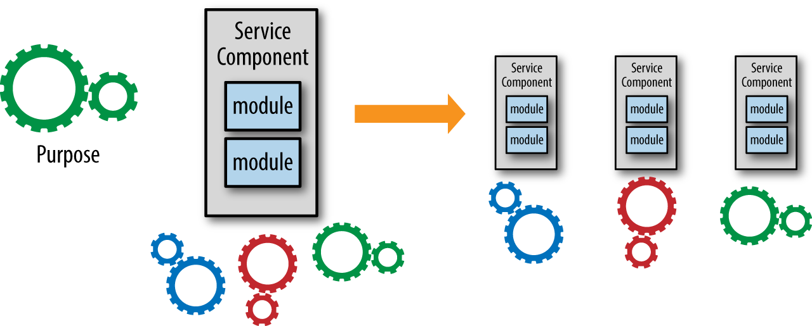
Sam Newman提供了一个很好的可操作的方法，开始不妨将服务划分成粗粒度的服务，随着对服务了解更多，再进一步划分成更小粒度的服务。
分析数据库事务
数据库事务更正式的叫做 ACID 事务 （atomicity, consistency, isolation, and durability）。ACID事务封装多个数据库更新为一个工作单元，工作单元要不整体完成，要不就出现错误而回滚。
因为微服务架构中服务是分布式的独立的应用，再两个或者多个服务之间维护 ACID 事务就极度困难，所以微服务架构中经常会依赖 BASE (basic availability, soft state, and eventual consistency)。尽管如此，你还是再特定的服务中要使用 ACID 事务。当你需要在 ACID vs. BASE 事务中做艰难的决定的时候，可能你的服务划分的就太细了。
当发现不能使用最终一致性时，你通常就会把服务从细粒度调整为粗粒度的服务，如图所示。
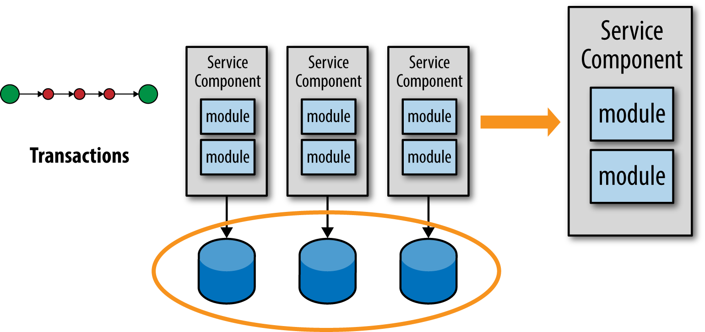
分析服务编排
第三个衡量方式是分析服务编排。服务编排是指服务之间的通讯，通常也指内部服务通讯。
远程调用服务是需要花时间的，它会降低应用整体的性能。再者，它也会影响服务的健壮性和可靠性。
如果你发现完成一个逻辑请求需要调用太多的服务时，服务的划分可能粒度就太小了。
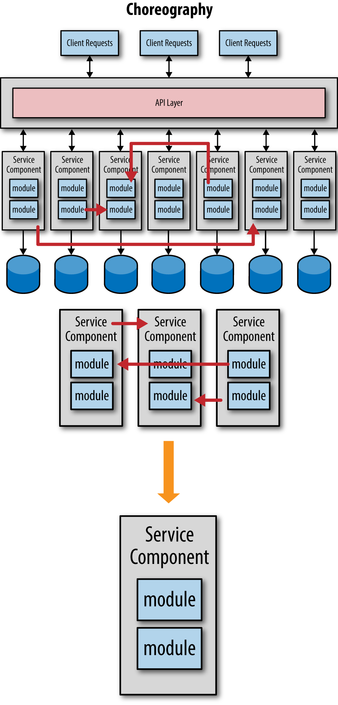
整合服务、合并到更粗粒度可以提升应用的整体性能，提高应用的健壮性和可靠性。你还可以移除服务之间的依赖，可以更好的控制、测试和发布。
当然你可能会说调用多个服务可以并行的执行，提到应用的响应，比如 reactive 架构的异步编程方式， 关键还是要权衡利弊， 确保对用户的及时响应以及系统整体的可靠性。
无因的开发者陷阱
Developer Without a Cause Pitfall
名字来自詹姆斯·迪恩演的电影《无因的反叛》（Rebel Without a Cause），一个问题青年因为错误的原因做了错误的决定。
很多架构师和开发者在微服务的开发中权衡利弊， 比如服务粒度和运维工具，但是基于错误的原因，做了错误的决定。
下图就是一个场景。服务被认为粒度太细，影响性能和可靠性，所以要迁移到一个单一的粒度更粗的服务上。
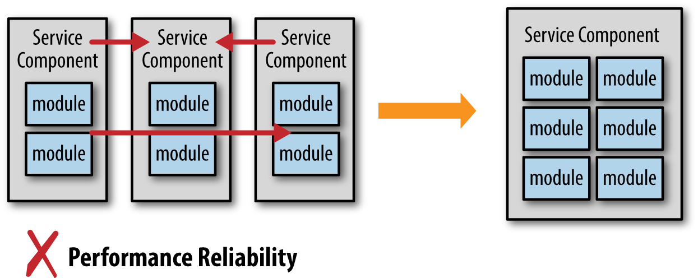
看起来合情合理，但是没有考虑tradeoff。发布、改变控制、测试都深受影响。
下面正好相反，将粗粒度服务划分成细粒度的服务。
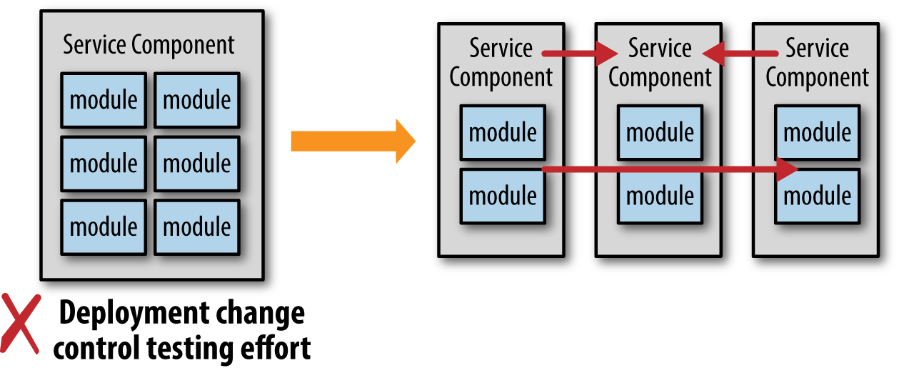
如果你不考虑这种改变带来的tradeoff，可能影响是很大的。
作者指出，要深刻理解选择微服务后面的商业驱动。
随大流陷阱
Jump on the Bandwagon Pitfall
因为微服务是现在的潮流，所以你选择了微服务，还没有仔细的分析你的商业需求、商业驱动、组织架构和技术环境，这就是随大流陷阱。
微服务并不适合所有的场景。
避免这个陷阱的方式充分理解微服务的好处和短处，俗话说，知己知彼，百战不殆。
好处：
- 发布：易于发布
- 测试：易于测试
- 改变控制：更容易的改变一个服务的功能
- 模块-
- 规模可扩展
短处
- Team组织改变
- 性能
- 可靠性降低
- 运维难度加大
所以理解了微服务的优缺点，结合自己的实际情况，来决定是否要采用微服务。
其它架构模式
微服务的架构很好，但是不是唯一的架构模式，比如下面还有一些其它的架构模式：
- Service-Based Architecture
- Service-Oriented Architecture
- Layered Architecture
- Microkernel Architecture
- Space-Based Architecture
- Event-Driven Architecture
- Pipeline Architecture
当然你并不一定只使用唯一的一种架构模式，你可能在系统中混用这些架构模式。
下面有一些架构的参考资料：
- Software Architecture Fundamentals: Understanding the Basics
- Software Architecture Fundamentals: Beyond the Basics
- Software Architecture Fundamentals: Service-Based Architecture
- Software Architecture Patterns
- Microservices vs. Service-Oriented Architecture
静态契约陷阱
The Static Contract Pitfall
这一节主要讲服务的版本控制。入股服务一开始就没有考虑版本控制，服务的schema发生变化时，或者内部实现逻辑有变化时消费者和服务器之间的通讯和业务处理就会发生问题。
所以你要为你的服务设计版本号。
有两种实现方式，在header中加入版本号，或者在服务的schema中加入版本号。
我们到了吗陷阱
Are We There Yet Pitfall
这个陷阱发生在你不知道远程调用要花多长时间的情况。50秒？平均多长时间呢，长尾的延迟呢？
首先你应该测量服务的调用时间，至少能知道一个服务远程调用的大概时间。
然后你应该评估不同的服务通讯协议的性能，比如REST、JMS、AMQP等。
当然性能也不是唯一个衡量远程通讯协议的因素，比如下面一节中讲到的内容。
REST陷阱
使用REST风格非常的流行，大部分的软件框架也选择它作为通讯的方式，比如DropWizard, Spring Boot等，有兴趣的读者可以阅读我写的Java RESTful框架的性能比较。
既然大家都在用它，还怎么是个陷阱呢？
如果把REST作为唯一的通讯方式，就有可能掉入这个陷阱。比如如何处理异步通讯(http 1.1是blocking的)、如何在一个事务中管理多次服务调用？如何支持广播？
你应该考虑两种类型的消息标准作为微服务架构中的消息传递：特定平台的标准和平台无关的标准。
特定平台的标准比如 JMS for java、MSMQ for .net。平台无关的比如 AMQP。
使用消息系统的好处可以异步请求，还可以实现广播的方式，还可以实现事务请求。
作者是 Java Message Service 第二版的作者之一，所以对消息系统有自己的见解。